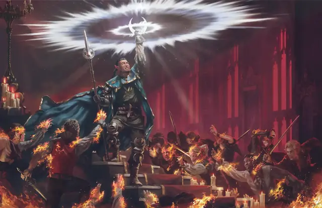

Дневной свет
Daylight
3 уровень, Воплощение

Время сотворения Действие
Дистанция 60 футов
Компоненты В, С
Длительность 1 час
Классы Друид, Жрец, Паладин, Следопыт, Чародей
Подклассы Домен света (Жрец), Небожитель (Колдун)
Пока заклинание действует, из точки, выбранной вами в пределах дистанции, исходит солнечный свет, заполняя Сферу радиусом 60 футов. Область этой Сферы — Яркий свет, и от неё исходит Тусклый свет ещё на 60 футов.
Вы также можете сотворить заклинание не на точку, а на объект, если его никто не носит и не несёт. В таком случае солнечный свет заполняет 60-футовую Эманацию с центром на этом объекте. Что-нибудь непрозрачное, например, чаша или шлем, может перекрывать распространение этого света.
Если область действия этого заклинания пересекается с областью Темноты, созданной заклинанием 3-го уровня или ниже, то заклинание, создавшее Темноту, рассеивается.